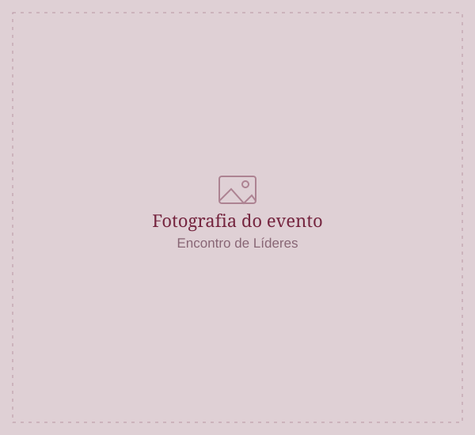
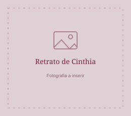
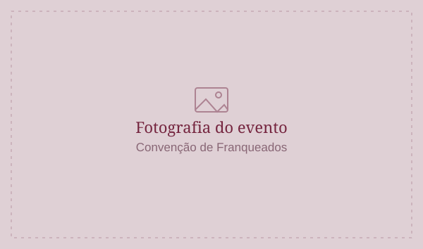
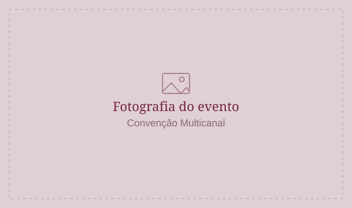

01 / Experiências
Eventos corporativos
Planejamento da jornada de conteúdo, gestão de frentes, roteirização e acompanhamento da execução.
Explorar projetosJornalismo · Conteúdo · Estratégia
Sou jornalista e profissional de conteúdo. Desenvolvo projetos que combinam pensamento editorial, estratégia e execução — de narrativas para marcas e lideranças a roteiros e jornadas de conteúdo para eventos corporativos.


01 · Identidade profissional
A base do meu trabalho é o jornalismo: escuta, pesquisa, apuração e construção de narrativas que fazem sentido para quem está do outro lado.
Essa experiência atravessa diferentes formatos — reportagens, conteúdo para executivos, publicações institucionais, roteiros e projetos de comunicação para marcas. Em eventos corporativos, esse olhar se amplia para a jornada de conteúdo, a integração das frentes e a experiência ao vivo.
A forma muda. O compromisso com a narrativa, a intenção e a clareza permanece.
02 · Frentes de atuação
Atuação flexível, de projetos editoriais e escrita executiva a estratégias e experiências de marca.
01 / Experiências
Planejamento da jornada de conteúdo, gestão de frentes, roteirização e acompanhamento da execução.
Explorar projetos02 / Escrita
Conteúdos para LinkedIn e outras redes, livros e publicações institucionais, com voz e intenção editorial.
03 / Jornalismo
Reportagens, entrevistas e produção de conteúdo jornalístico para veículos e publicações.
04 / Estratégia
Estratégia de comunicação, planejamento editorial, roteiros para vídeo e podcast e campanhas com marcas.
Projetos selecionados
Uma amostra de projetos corporativos que conectam conteúdo, narrativa, liderança e experiência.

2024 · 2025Grupo Boticário
Jornada de conteúdo, gestão das frentes e integração das entregas audiovisuais.
Ver projeto
2026Grupo Boticário
Roteiro, jornada de conteúdo e acompanhamento da operação para mais de 800 líderes.
Ver projetoAegea Saneamento
Planejamento da jornada, curadoria de palestrantes, roteirização e acompanhamento presencial.
Ver projeto03 · Ecossistema profissional
Minha atuação conecta diferentes competências, empresas e profissionais para desenvolver projetos de comunicação, conteúdo e experiências.
Trabalho de forma autônoma, por meio da Be. Experiência e Conteúdo e em parceria com agências e equipes de clientes.
O formato de colaboração varia conforme o escopo e as necessidades de cada projeto.
Marca própria
Uma frente de atuação para desenvolver e realizar projetos de conteúdo e experiências de marca.
Parceria profissional
Parceria em projetos de comunicação e conteúdo, integrada a uma rede de trabalho colaborativo.
Colaboração por projeto
Atuação direta ou em times multidisciplinares, com escopos e responsabilidades definidos a cada trabalho.
Meu jeito de trabalhar
Cada projeto pede uma combinação diferente de repertório, método e colaboração. O trabalho começa por entender o contexto e termina quando a ideia encontra a forma certa.
Objetivos, públicos, mensagens, desafios e o que precisa acontecer para o projeto funcionar.
Organizar ideias, construir a linha editorial e definir formatos, conteúdo e sequência.
Alinhar pessoas, parceiros e entregas para manter coerência entre estratégia e execução.
Vamos conversar
Conteúdo, roteiros e projetos de comunicação construídos com intenção.